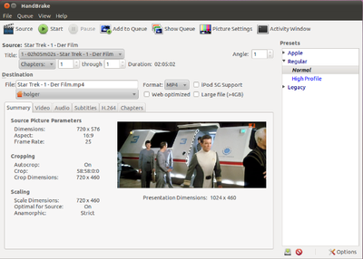

HandBrake
Dieser Artikel wurde für die folgenden Ubuntu-Versionen getestet:
Ubuntu 16.04 Xenial Xerus
Ubuntu 14.04 Trusty Tahr
Zum Verständnis dieses Artikels sind folgende Seiten hilfreich:
HandBrake  ist ein sehr einfach zu bedienendes Programm zum Umwandeln von DVDs, Transport-Strömen (DVB) oder Videos in die Formate x264, MP4, AVI, OGM oder MKV. Es gibt Voreinstellungen für etliche Geräte, wie Apple iPod, Apple TV, Xbox 360, PlayStation Portable, Playstation 3 oder Android (ab Version 0.9.6). Eigene Einstellungen können in Profilen abgespeichert werden. Es basiert auf dem sehr schnellen Encoder FFMpeg. Es besitzt eine Autocrop-Funktion, kann mehrere Audiospuren sowie Untertitel in MKV-Dateien speichern und besitzt eine "Job Queue", um mehrere Projekte abzuarbeiten.
ist ein sehr einfach zu bedienendes Programm zum Umwandeln von DVDs, Transport-Strömen (DVB) oder Videos in die Formate x264, MP4, AVI, OGM oder MKV. Es gibt Voreinstellungen für etliche Geräte, wie Apple iPod, Apple TV, Xbox 360, PlayStation Portable, Playstation 3 oder Android (ab Version 0.9.6). Eigene Einstellungen können in Profilen abgespeichert werden. Es basiert auf dem sehr schnellen Encoder FFMpeg. Es besitzt eine Autocrop-Funktion, kann mehrere Audiospuren sowie Untertitel in MKV-Dateien speichern und besitzt eine "Job Queue", um mehrere Projekte abzuarbeiten.
Ursprünglich wurde HandBrake für BeOS entwickelt, aber mittlerweile wurde die Software nach Mac OS X, GNU/Linux und Windows portiert. Es gibt für alle drei Betriebssysteme jeweils eine Version mit grafischer Oberfläche (GUI, bei Linux: GTK) sowie eine Kommandozeilenversion. Für Linux und Mac OS X existiert außerdem eine 64-Bit-Version.
Ein Übersicht über die verwendeten Bibliotheken findet man auf der Homepage. Dort gibt es auch weiterführende Informationen zu den wesentlichen Funktionen . Der Vorteil von HandBrake gegenüber anderen Programmen ist, dass das ganze Programm nur aus einer Datei besteht, in die auch alle Codecs einkompiliert sind.
Hinweis:
Die Umwandlung von DVDs in AVI-Dateien, in denen DivX- oder XviD-Videos enthalten sind, ist seit der Version 0.9.4 nicht mehr möglich. Damit sind als Zielformate nur noch MP4, MKV und OGM möglich (Quelle: Winfuture 01/2010).
Es werden folgende Ausgabeformate unterstützt:
Video Codecs: MPEG-4 (mit FFMpeg oder Xvid als Encoder), H.264, H.265, Theora
Optionen: gleichbleibende Qualität (1-Pass Encoding), feste Filmgröße (2-Pass Encoding) oder fester Bitrate (für das Format H.264 sind mehr Einstellungsmöglichkeiten verfügbar)
Audio Codecs: AAC, MP3, Vorbis und AC-3 pass-through (optional können auch mehrere Tonspuren encodiert werden)
Containerformate: MP4, MKV und OGM
DVD-Untertitel werden unterstützt. Bei bestimmten Containern werden diese ins Bild eingebrannt, z.B. können diese für MKV an- und ausgeschaltet werden.
Hinweis:
Ein unter Windows ausgeführtes HandBrake unterstützt auch das hardwarebeschleunigte Encoding einiger Intel-Prozessoren, das als Quick Sync Video (QSV) bekannt ist. Unter Linux (und anderen unixartigen Systemen) wird QSV von HandBrake - obwohl technisch möglich - nicht unterstützt (Quelle: https://forum.handbrake.fr/viewtopic.php?f=13&t=36063).
Unterstützt werden sowohl DVDs (direkt, als ISO-Datei oder aus einem DVD VIDEO_TS Ordner als VOB-Dateien) und Transportströme (MPEG-TS von Fernsehkarten) als auch alle Formate, die FFmpeg lesen kann. Handbrake kann aus rechtlichen Gründen keinen Kopierschutz für DVDs umgehen. Um DVD-Inhalte lesen zu können, welche mit CSS verschlüsselt sind, ist die Bibliothek libdvdcss notwendig. Eine Anleitung zur Installation findet sich im Artikel DVD-Wiedergabe.
Ähnlich einfach in der Bedienung ist das Programm Arista Transcoder. Weitere Alternativen zu HandBrake finden sich im Übersichtsartikel Videodateien umwandeln.
Installation¶
HandBrake befindet sich ab Ubuntu 14.04 in den offiziellen Paketquellen. Folgende Pakete können installiert werden [1]:
handbrake (universe, grafische Benutzeroberfläche)
 mit apturl
mit apturl
Paketliste zum Kopieren:
sudo apt-get install handbrake
sudo aptitude install handbrake
oder
handbrake-cli (universe, Kommandozeilenversion)
mit apturl
Paketliste zum Kopieren:
sudo apt-get install handbrake-cli
sudo aptitude install handbrake-cli
PPA¶
Um die aktuellste Version nutzen zu können und für ältere Ubuntu-Versionen muss dagegen ein "Personal Package Archiv" (PPA) [2] verwendet werden.
Adresszeile zum Hinzufügen des PPAs:
ppa:stebbins/handbrake-releases
Hinweis!
Zusätzliche Fremdquellen können das System gefährden.
Ein PPA unterstützt nicht zwangsläufig alle Ubuntu-Versionen. Weitere Informationen sind der  PPA-Beschreibung des Eigentümers/Teams stebbins zu entnehmen.
PPA-Beschreibung des Eigentümers/Teams stebbins zu entnehmen.
Damit Pakete aus dem PPA genutzt werden können, müssen die Paketquellen neu eingelesen werden.
Nach dem Aktualisieren der Paketquellen können folgende Paket installiert werden:
handbrake (ppa)
mit apturl
Paketliste zum Kopieren:
sudo apt-get install handbrake
sudo aptitude install handbrake
Aus dem Quellcode¶
Es ist auch möglich, das Programm aus dem Quellcode selbst zu kompilieren. Dies wird im Artikel HandBrake/Kompilieren beschrieben.
Entwicklerversion¶
Unter Umständen kann zum Ausprobieren neuer Features auch die Entwicklerversion interessant sein. Aber mit einer Entwicklungsversion können Fehler und andere Probleme auftreten und im schlimmsten Fall erhält man ein nicht mehr funktionierendes System. Als Einsteiger sollte man die Finger von Entwicklerversionen lassen!
Adresszeile zum Hinzufügen des PPAs:
ppa:stebbins/handbrake-git-snapshots
Hinweis!
Zusätzliche Fremdquellen können das System gefährden.
Ein PPA unterstützt nicht zwangsläufig alle Ubuntu-Versionen. Weitere Informationen sind der PPA-Beschreibung des Eigentümers/Teams stebbins zu entnehmen.
Damit Pakete aus dem PPA genutzt werden können, müssen die Paketquellen neu eingelesen werden.
Benutzung¶

Programmaufruf¶
Nach der Installation kann Handbrake bei Ubuntu-Varianten mit einem Anwendungsmenü über den Eintrag "Unterhaltungsmedien -> Handbrake" aufgerufen werden. Alternativ führt man den Befehl "ghb" aus. Man gelangt direkt ins Hauptmenü.
Quelle auswählen¶
Um Videodateien auszuwählen, klickt man auf "Source" oder geht auf "File -> Source". Daraufhin öffnet sich ein Auswahldialog. Um direkt von einer DVD auszulesen, wählt man unter "Detected Device" das Quelllaufwerk aus. Die Entwickler weisen daraufhin, dass es besser ist, die DVD auf die Festplatte zu kopieren (siehe Video-DVD kopieren). Das Laufwerk wird weniger beansprucht, außerdem ist die Festplatte schneller. Nach der Auswahl wird der Film selbständig analysiert. Bei DVDs ist es nun möglich, die gewünschten Titel sowie deren Kapitel auszuwählen.
Ziel auswählen¶
Im Menüpunkt "Destination" kann der Zielordner über "Browse" eingestellt werden. Standardmäßig ist dies der Desktop. Wenn man zwei oder mehr Titel von einer DVD rippt, sollte man beachten, dass man den Namen ändert. Ansonsten überschreibt die zweite Datei die erste.
Unter "Container" kann das Containerformat ausgewählt werden. Welcher Container geeignet ist, hängt vom Verwendungszweck ab. Der Standardcontainer von Handbrake ist MP4. Einen guten Vergleich findet man auf Brother Johns Encodingwissen  .
.
Audio/Untertitel¶
Über "Preferred Language" kann die bevorzugte Sprache der Tonspur ausgewählt werden. Mit dem Schieberegler "Dynamic Range Compression" wird der Unterschied zwischen lauten und leisen Stellen im Film ausgeglichen. Empfohlen werden Werte zwischen 1.5 - 2.5. Standardmäßig wandelt Handbreak den Ton in AAC um. Bei allen Tonformaten ist es möglich, die Bitraten zu ändern. Dies beeinflusst die Tonqualität und die resultierende Dateigröße. Auch für Audiocodecs existiert ein guter Vergleich auf Brother Johns Encodingwissen .
DVD-Untertitel werden unterstützt, diese werden direkt ins Bild eingebrannt. Es kann die bevorzugte Sprache ausgewählt werden. Wenn die Option "Allow only forced subtitles" aktiviert ist, wird der Untertitel nur an den Stellen gezeigt, an denen in einer anderen Sprache gesprochen wird.
Kapitel¶
Es werden die Kapitel einer DVD übernommen. Diese können im letzten Reiter umbenannt oder deaktiviert werden. Nur MKV und MP4 unterstützen Kapitellisten. Um diese in MP4-Containern bzw. unter Quicktime oder AppleTV nutzen zu können, muss die Endung .m4v lauten.
Kommandozeilenversion¶
Nachdem HandBrake entweder als Kommandozeilenversion installiert oder wie beschrieben kompiliert worden ist, kann die Anwendung in einem Terminal durch Eingabe des Befehls [3]
HandBrakeCLI --help
aufgerufen werden, woraufhin eine Liste der Befehlsparameter ausgegeben wird.
Beispiel 1: eine DVD als AVI-File mit MPEG-4 Video, Dolby-AC3 Audio und einer Größe von 1400 MByte speichern
HandBrakeCLI -e xvid -E ac3 -2 -S 1400 -i /dev/cdrom -o MOVIENAME.avi
Hinweis:
Mittlerweile sind AVI und xvid nicht mehr Bestandteil von HandBrake (Quelle ).
Beispiel 2: konvertiert den ersten Track einer DVD in ein für den iPod Mini abspielbares Format
HandBrakeCLI -i /dev/sr0 -t 1 -o /home/otto/track1.mp4 -e x264b13 -b 700 -R 44100 -B 128 -2 -w 320
Die Option -e gibt den Encoder an (hier: x264 Baseline Profile), -b die Bitrate des Videos in kbps, -R die Audio Sample Rate, -B die Audio Bit Rate in kbps, -2 steht für 2-Pass Encoding, -w gibt die Breite des Videos an (die Höhe wird dann anhand des Original-Seitenverhältnisses berechnet).
Weitere Infos zu den Aufrufparametern finden sich im HandBrake CLI-Guide .
Die mit HandBrake erstellten Videodateien sollten sich zumindest mit VLC und MPlayer (siehe VideoPlayer) abspielen lassen.
Links¶
Presets
und deren Kommandozeilen-Parameter
DVDs in Videos umwandeln mit Handbrake
- Artikel LinuxUser, 07/2006Videodateien umwandeln
 Übersichtsartikel
Übersichtsartikel
- Erstellt mit Inyoka
-
 2004 – 2017 ubuntuusers.de • Einige Rechte vorbehalten
2004 – 2017 ubuntuusers.de • Einige Rechte vorbehalten
Lizenz • Kontakt • Datenschutz • Impressum • Serverstatus -
Serverhousing gespendet von